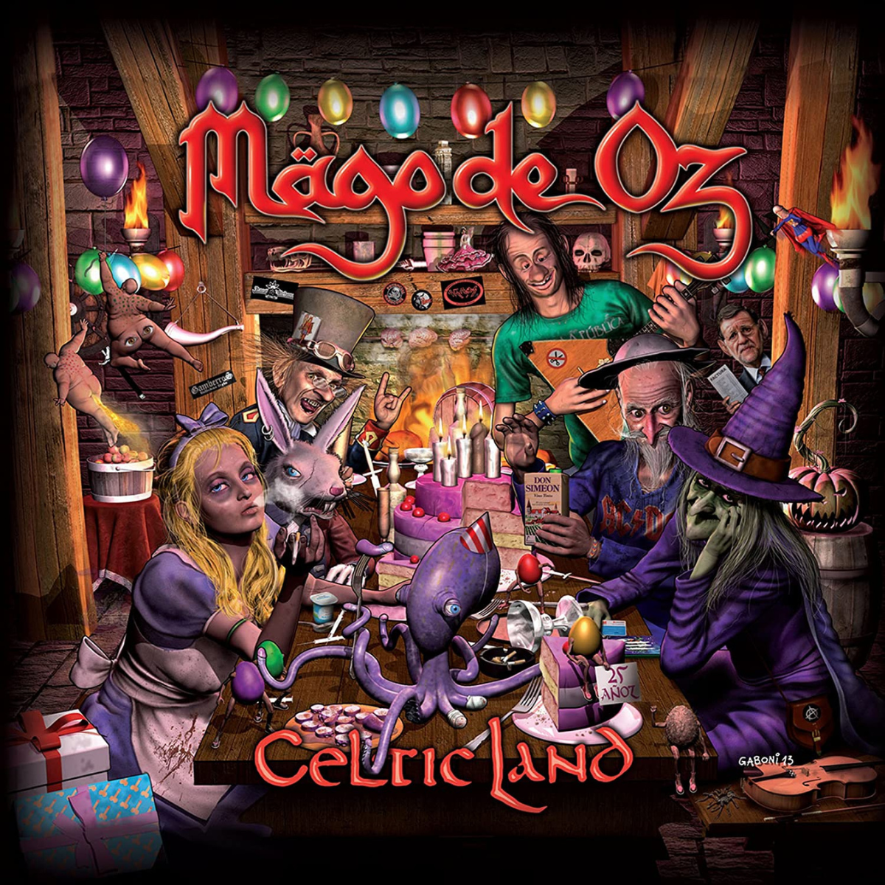

El primer disco del LP cuenta con la participación de artistas internacionales como Korpiklaani, Eric Martin, To/Die/For y Elvenking junto a los miembros de Mägo de Oz, los cuales interpretan versiones en inglés de los éxitos de la banda. En el segundo disco participaron artistas españoles como Tony Solo (exvocalista de Sangre Azul), Leo Jiménez (exvocalista de Saratoga), Carlos Escobedo (vocalista de Sôber) y Víctor García (vocalista de WarCry). Para evitar disputas legales con su anterior discográfica, Locomotive Music, el grupo sólo pudo incluir temas de Gaia II: La voz dormida, Gaia III: Atlantia, Gaia: Epílogo, Hechizos, pócimas y brujería y las canciones «Fiesta pagana» (de Finisterra) y «La costa del silencio» (de Gaia). Por otro lado, el álbum también contiene una versión de la canción «Acércate y bésame» de la banda uruguaya La Trampa. Además, se incluye la canción «La Luna en ti», cantada por Zeta, la cual inicialmente fue escrita por Txus para Mägo de Oz, pero que finalmente fue interpretada por su otro grupo, Bürdel King, en su álbum debut, ¡Ladran, luego cabalgamos!. Las letras en inglés fueron traducidas y adaptadas desde el castellano por Patricia Tapia, bajo la supervisión de Txus y Yolanda Blazquez
Celtic Land
